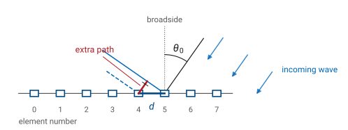
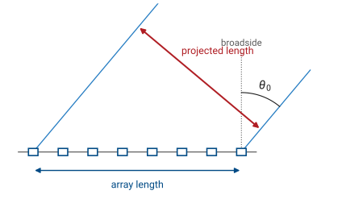

L18 - Beam Steering Theory#
Beam Steering Theory
This lesson supplies the numbers.
Lesson 18 · Antennas, Phased Arrays, and Radar Systems · Dr. Neil Rogers
Learning Objectives
- I can derive the progressive element-to-element phase required to steer a beam from the path-length difference.
- I can compute the per-element phase settings for a commanded steer angle, including wrapping modulo 360 degrees.
- I can predict the steered array pattern by shifting the array-factor argument.
- I can quantify beam broadening with scan angle.
- I can work the inverse problem: recover the steer angle from a set of element phases.
Lesson 17 put the PHASER in front of you: eight patch elements in a row, two ADAR1000 beamformer chips, and a phase control for every element in the Phase Control panel of the GUI. Turning those knobs moved the beam, but nothing so far has said what to set them to. This lesson supplies the numbers. We derive the element-to-element phase from the arrival geometry, turn it into the eight settings the hardware accepts, predict what the steered pattern looks like, and then read the process backwards — given a set of phases, find the angle the array is pointing.
The steering idea
Start with the array doing nothing at all. Eight elements sit in a row, spaced \(d = 14\ \text{mm}\) apart, and a plane wave arrives from an angle \(\theta_0\) measured from broadside. The wave does not reach the eight elements at the same instant. It reaches the element nearest the source first and works its way across the row.
Step 1: the geometry

Step 2: the extra path
Look at two neighboring elements. The wavefront that has just touched one of them still has to travel a short leg before it touches the other. That leg is one side of a right triangle whose hypotenuse is the element spacing \(d\) and whose angle at the element is \(\theta_0\), so its length is
Element \(n\) sits \(n\) spacings from element 0, so its path runs \(n\ d\sin\theta_0\) shorter — it sees the wave that much sooner.
Step 3: path becomes time
Divide by the speed of light and the geometry becomes timing:
For the course array steered to \(30^\circ\), that is \(7\ \text{mm}\) of path and about \(23\ \text{ps}\) of arrival-time difference per element.
Step 4: time becomes phase
Now convert the delay of a sinusoid into a phase. A signal delayed by \(\Delta t\) at frequency \(f\) is retarded in phase by \(\omega\Delta t\), so the element-to-element phase difference produced by the incoming wave is
Read the equation
This is the progressive phase, and it is the equation the rest of Module 3 runs on. Read what it says. At broadside, \(\sin\theta_0 = 0\) and no phase is needed, which is why the array points to \(0^\circ\) with every phase set to zero. The phase grows with the sine of the steer angle rather than with the angle, so the same \(10^\circ\) of extra scan needs much less added phase near endfire than it does near broadside. And the phase scales with the electrical spacing \(d/\lambda\): the same array asked to steer the same angle needs more phase per element as the frequency goes up.
Key point
\(\Delta\phi = kd\sin\theta_0\) converts a geometric path difference into an electrical one. Everything else in this lesson is bookkeeping on top of it.
One frequency only
Note
\(\Delta t\) is a true delay and \(\Delta\phi\) is a phase shift, and the two are equal at exactly one frequency — the one you used for \(k\). A true time delay would steer the beam to \(\theta_0\) at every frequency in the band; a phase shifter steers it to \(\theta_0\) only at the design frequency and to a slightly different angle everywhere else. That difference has a name, beam squint, and L26 puts a number on it. For now, note that every phase you compute today carries a frequency stamp.
Compensation: which way?
The array’s own geometry gives element \(n\) a head start of \(n\ \Delta\phi\). To make all eight signals add in phase, the beamformer has to give that head start back, so the commanded phase is the negative of it:
Element 0 is the reference and gets zero. Each element after it is one step further behind. Flipping the sign of \(\theta_0\) flips the sign of \(\Delta\phi\) and runs the ramp the other way, which is how the same eight channels cover both sides of broadside.
The course array
For the course array at the workshop frequency, \(\lambda = 29.1\ \text{mm}\), \(d/\lambda = 0.481\), and
That single number does most of the work: multiply it by \(\sin\theta_0\) and you have \(\Delta\phi\).
Worked example — the phase table for $\theta_0 = 30^\circ$
Worked example — the phase table for \(\theta_0 = 30^\circ\)
At \(10.3\ \text{GHz}\) with \(d = 14\ \text{mm}\):
Element \(n\) is commanded to \(-n(86.6^\circ)\). The ADAR1000 accepts a phase in \(0^\circ\) to \(360^\circ\), so each value is wrapped by adding whole turns until it lands in that range.
Worked example, continued — the wrapped table
Worked example — the phase table for \(\theta_0 = 30^\circ\), continued
\(n\) |
0 |
1 |
2 |
3 |
4 |
5 |
6 |
7 |
|---|---|---|---|---|---|---|---|---|
\(\phi_n\) (ramp) |
0 |
\(-86.6\) |
\(-173.2\) |
\(-259.8\) |
\(-346.4\) |
\(-433.0\) |
\(-519.6\) |
\(-606.2\) |
turns added |
0 |
\(+360\) |
\(+360\) |
\(+360\) |
\(+360\) |
\(+720\) |
\(+720\) |
\(+720\) |
\(\phi_n\) (set) |
0 |
273.4 |
186.8 |
100.2 |
13.6 |
287.0 |
200.4 |
113.8 |
The bottom row is what goes into the hardware. It looks like a sawtooth rather than a ramp, and it is correct: a phase of \(-433.0^\circ\) and a phase of \(+287.0^\circ\) produce the same field from that element.
Wrapping loses the delay, not the beam
Wrapping discards whole turns, and at a single frequency nothing is lost by discarding them. The array cannot tell the difference. What the wrapped table does lose is the record of the true delay, which is the reason a wideband system uses time-delay units instead of, or alongside, phase shifters.
The steered pattern
L16 built the array factor for a uniform line of \(N\) elements with a progressive phase between them. With the ramp \(\phi_n = -n\Delta\phi\) applied, element \(n\) contributes a propagation phase \(n\ kd\sin\theta\) and a commanded phase \(-n\ \Delta\phi\), so the array-factor argument becomes
The array factor, shifted
The function did not change. Its argument did. The peak still sits where \(\psi = 0\), and \(\psi = 0\) now means \(\sin\theta = \sin\theta_0\), so the main lobe points at the commanded angle.
The shift is in sine space
Every other feature of the pattern moves with it, but rigidly in \(\sin\theta\), not in \(\theta\). Plot the pattern against \(\sin\theta\) and steering slides the whole curve sideways without changing its shape. Plot it against \(\theta\) and the same curve stretches as it moves, which is exactly the beam broadening of Part 4.
Where the nulls land
The nulls follow the same substitution. \(AF_N\) vanishes when \(N\psi/2\) is a nonzero multiple of \(\pi\), so
For the course array, \(\lambda/Nd = 29.1/112 = 0.260\). Steered to \(30^\circ\), the two nulls flanking the main lobe are at \(\sin\theta = 0.240\) and \(\sin\theta = 0.760\), or \(13.9^\circ\) and \(49.5^\circ\). They are no longer symmetric about the beam: the main lobe reaches \(16.1^\circ\) below the peak and only \(19.5^\circ\) above it. The \(m = 2\) null on the upper side would need \(\sin\theta = 1.020\), which no real angle satisfies, so that null has left visible space entirely.
The ramp and the beam together
Use the widget below to connect the two halves of the lesson. Drag the steer angle and watch the eight commanded phases and the main lobe move together, then switch the phase display between the wrapped values and the unwrapped ramp — the sawtooth is the same physics as the straight line. Set \(\theta_0 = 30^\circ\) and check the bars against the worked table above, then compare the \(-3\) dB width printed on the pattern with the HPBW pill as you scan out toward \(60^\circ\).
Beam broadening
Steering widens the beam, and the reason is visible in the geometry rather than in the algebra. A source out at \(\theta_0\) does not see the full physical length of the array. It sees the array’s projection onto the plane perpendicular to its line of sight, and that projection is shorter by \(\cos\theta_0\).
The array’s projection

The broadening rule
The effective aperture length is therefore
L15 gave the half-power beamwidth of a uniform aperture as \(0.886\ \lambda/L\). Substituting the projected length,
Where the scan loss lives
The beam broadens as \(1/\cos\theta_0\). The same projection argument sets the scan loss in gain: the aperture the array presents to a source at \(\theta_0\) is smaller by \(\cos\theta_0\), so the peak gain drops by \(10\log_{10}(\cos\theta_0)\). Note where that loss lives. The array factor by itself barely changes its directivity as it scans — it is the element pattern, which is not isotropic and rolls off away from its own boresight, that carries the projected-aperture loss. L22 works the element factor and the scanned gain out properly; for design estimates today, use \(10\log_{10}(\cos\theta_0)\).
Broadening, in numbers
\(\theta_0\) |
\(\cos\theta_0\) |
HPBW |
Gain relative to broadside |
|---|---|---|---|
\(0^\circ\) |
1.000 |
\(13.2^\circ\) |
reference |
\(30^\circ\) |
0.866 |
\(15.2^\circ\) |
\(-0.6\) dB |
\(45^\circ\) |
0.707 |
\(18.7^\circ\) |
\(-1.5\) dB |
\(60^\circ\) |
0.500 |
\(26.4^\circ\) |
\(-3.0\) dB |
Those four numbers are worth carrying. They are why a scanned array is specified over a limited field of view: at \(60^\circ\) the PHASER’s beam is twice as wide as at broadside and its peak gain has dropped by \(3\ \text{dB}\), and pushing further gains very little.
How good is the 1/cos rule?
Note
The \(1/\cos\theta_0\) rule is an approximation, and it reads slightly narrow at large scan angles. Measuring the \(-3\) dB width directly off the array factor for this array gives \(13.3^\circ\) at broadside and \(19.1^\circ\) at \(45^\circ\), both within a few tenths of the rule, but \(30.4^\circ\) at \(60^\circ\) against the rule’s \(26.4^\circ\). Use the rule for design estimates out to about \(50^\circ\) and the pattern itself past that.
The inverse problem
The lab hands you the opposite problem. The GUI, or a data file, gives you eight phases, and you have to say where the beam is pointing. Everything you need is in \(\phi_n = -n\Delta\phi\), run in reverse:
Difference neighboring elements: \(\phi_{n+1} - \phi_n\).
Unwrap. Add or subtract \(360^\circ\) from any difference that disagrees with the others until all seven agree.
That common step is \(-\Delta\phi\).
Solve \(\sin\theta_0 = \Delta\phi/kd\) and take the arcsine.
Worked example — recovering the steer angle
Worked example — recovering the steer angle
An array is found holding these settings:
\(n\) |
0 |
1 |
2 |
3 |
4 |
5 |
6 |
7 |
|---|---|---|---|---|---|---|---|---|
\(\phi_n\) (deg) |
0 |
59.3 |
118.5 |
177.8 |
237.0 |
296.3 |
355.6 |
54.8 |
The first six differences are all \(+59.3^\circ\). The seventh is \(54.8 - 355.6 = -300.8^\circ\), which is \(+59.3^\circ\) once a full turn is restored, so the ramp is uniform with a step of \(+59.3^\circ\) per element:
Worked example, continued — reading the sign
Worked example — recovering the steer angle, continued
The ramp rises with \(n\) while the steer angle is negative, and that is the sign convention doing its job: the commanded phase is \(-n\Delta\phi\), so a rising ramp means a negative \(\Delta\phi\) and a beam on the negative side of broadside.
Two sanity checks
Two checks are worth building into the habit. If the seven differences cannot be made to agree, the array is not carrying a uniform steering ramp — it may have a per-element calibration offset in it, or the readout is not what you think it is. And if \(\vert\Delta\phi/kd\vert\) comes out greater than 1, no real angle produces that ramp, which points at an arithmetic or unit error.
What the hardware can set
One hardware limit belongs here before the lab. The ADAR1000’s phase shifter has 7 bits, so its smallest step is \(360^\circ/128 = 2.8125^\circ\) and your \(122.5^\circ\) is actually set as \(123.75^\circ\); L26 works out what that grid costs in sidelobe level and null depth.
Summary — the phase ramp
Symbol / idea |
What it is |
Number to remember |
|---|---|---|
\(\Delta\phi = kd\sin\theta_0\) |
progressive element-to-element phase |
\(173.2^\circ \times \sin\theta_0\) for the course array |
\(\phi_n = -n\ \Delta\phi\) |
commanded ramp, element \(n\) |
\(86.6^\circ\) per element at \(\theta_0 = 30^\circ\) |
wrapping |
whole turns removed to fit \(0^\circ\) to \(360^\circ\) |
\(-433.0^\circ\) is set as \(287.0^\circ\) |
Summary — the steered pattern
Symbol / idea |
What it is |
Number to remember |
|---|---|---|
\(\psi = kd(\sin\theta - \sin\theta_0)\) |
array-factor argument |
peak where \(\psi = 0\), so \(\theta = \theta_0\) |
\(\sin\theta_{\text{null}} = \sin\theta_0 \pm m\lambda/Nd\) |
null locations |
\(\lambda/Nd = 0.260\); nulls at \(13.9^\circ\) and \(49.5^\circ\) for \(\theta_0 = 30^\circ\) |
Summary — broadening and hardware
Symbol / idea |
What it is |
Number to remember |
|---|---|---|
\(\theta_{\text{HP}} \approx \theta_{\text{HP}}(0)/\cos\theta_0\) |
beam broadening |
\(13.2^\circ \to 18.7^\circ\) at \(45^\circ\), \(26.4^\circ\) at \(60^\circ\) |
scan loss |
peak gain falls as \(\cos\theta_0\), carried by the element pattern |
\(-3\) dB at \(\theta_0 = 60^\circ\) |
LSB \(= 360^\circ/2^B\) |
phase-shifter step |
\(2.8125^\circ\) for the ADAR1000’s 7 bits |
Practice
Where this is going
L19 puts this on the hardware. You will load the Beam Steering lab preset, command a steer angle, sweep, and compare the measured peak against the angle you asked for — and the phase table you computed in Part 2 is literally the predicted column of the lab sheet. Bring it with you, along with the HPBW numbers from Part 4, because the sweep measures beamwidth as well as peak position and the comparison only means something if the prediction was written down first.
Further out, the ideal steered pattern of this lesson starts to fray. L20 and L21 measure beamwidth against theory across element counts, L24 trades sidelobe level for beamwidth with a taper, and L26 collects the three ways a real steered array departs from today’s result: grating lobes when the spacing is too wide, beam squint when the frequency moves off the one you designed for, and quantization when the ideal ramp has to land on the \(2.8125^\circ\) grid. Read the L19 lab procedure before the next lesson and have your \(\theta_0 = 30^\circ\) phase table in hand when you walk in.